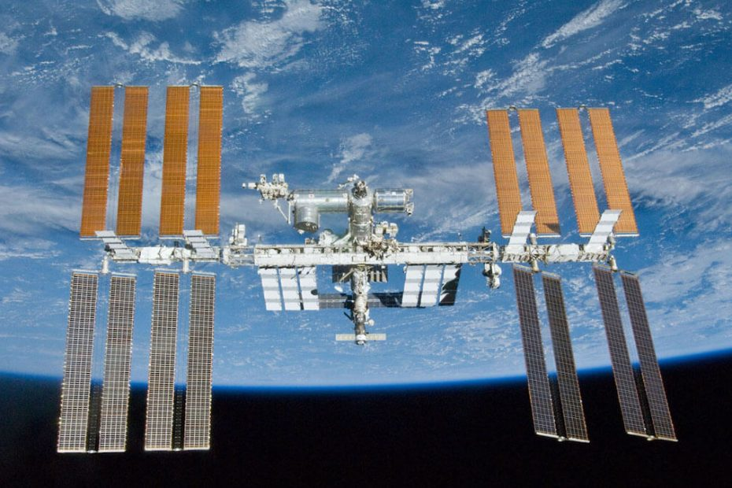

ကမ္ဘာပတ် လမ်းကြောင်း အနိုမ့်ပိုင်းမှာ ၂၂ ကြာ ပျံသန်းနေခဲ့တဲ့ အပြည်ပြည်ဆိုင်ရာ အာကာသစခန်း (International Space Station) ကို နောက်ထပ် သက်တမ်း ထပ်တိုးဖို့ ဒီ စီမံကိန်းမှာ ပါဝင်တဲ့ အဖွဲ့ဝင် နိုင်ငံအားလုံး သဘောတူညီမှု ရရှိသွားပြီလို့ နာဆာရဲ့ ထုတ်ပြန် ကြေငြာချက်အရ သိရပါတယ်။
ဒီ စီမံကိန်းမှာ ပါဝင်ကြတဲ့ အမေရိကန် ပြည်ထောင်စု၊ ဂျပန်၊ ကနေဒါ နဲ့ ဥရောပ အာကာသ အေဂျင်စီ တို့ အားလုံးက အပြည်ပြည်ဆိုင်ရာ အာကာသစခန်းကို သက္ကရဇ် ၂၀၃၀ အထိ သက်တမ်း တိုးသွားဖို့ သဘောတူလိုက်ကြပြီး ဖြစ်ပါတယ်။
မူလက နှုတ်ထွက်မယ်လို့ ခြိမ်းခြောက် ထားခဲ့တဲ့ ရုရှားနိုင်ငံ ကလဲ လာမယ့် ၂၀၂၈ အထိ ဆက်လက် ပါဝင် သွားမယ်ဆိုတာ ကတိပြုခဲ့ ပါတယ်။
ဒီ အာကာသ စခန်းယာဉ်ရဲ့ operation ပိုင်းကို အဓိက တာဝန်ယူ ထားတဲ့ နာဆာအဖွဲ့ကြီးဟာ အဖွဲ့ဝင် အာကာသ အေဂျင်စီ တွေနဲ့ ပူးပေါင်းပြီး အာကာသ စခန်းကြီး စဉ်ဆက်မပြတ် တာဝန်ထမ်းဆောင်နိုင်ဖို့ ဆက်လက် ဆောင်ရွက် သွားမယ်လို့ ဆိုပါတယ်။
ဒါ့အပြင် မဝေးတော့တဲ့ ကာလ တခုမှာ အစိုးရ အာကာသ စခန်း ကနေ ပုဂ္ဂလိက အာကာသ စခန်းယာဉ် တွေပေါ်ကို ပြောင်းလဲနိုင်ဖို့ကိုလဲ ကြိုးပမ်းသွားမှာ ဖြစ်ပါတယ်။
အပြည်ပြည် ဆိုင်ရာ အာကာသ စခန်းကို ၁၉၉၈ ခုနှစ်က လွှတ်တင်ခဲ့တာ ဖြစ်ပါတယ်။ လွှတ်တင်ခဲ့တဲ့ အချိန်က စလို့ ယခုအထိ နိုင်ငံ ၂၀ က အာကာသ သူရဲ ၂၆၆ ဦး လာရောက် တာဝန်ထမ်းဆောင် ခဲ့ပြီး ဖြစ်ပါတယ်။
အပြည်ပြည်ဆိုင်ရာ အာကာသ စခန်းရဲ့ အဓိက တာဝန်ကတော့ အာကာသ ထဲက သုတေသန ဓါတ်ခွဲခန်း အနေနဲ့ တာဝန်ထမ်းဆောင်တာပဲ ဖြစ်ပါတယ်။ ဒီ အာကာသ စခန်းယာဉ် ပေါ်မှာ သိပ္ပံ သုတေသန အမျိုးမျိုးကို ပြုလုပ်ခဲ့ပြီး ဖြစ်ပါတယ်။
အပြည်ပြည် အာကာသ စခန်းပေါ်မှာ ပြုလုပ်ခဲ့တဲ့ သိပ္ပံ သုတေသန တွေထဲမှာ အာကာသ နှင့် မြေကမ္ဘာ သိပ္ပံ စမ်းသပ်မှုတွေ၊ ဇီဝဗေဒ၊ လူ့ဇီဝကမ္မဗေဒ၊ ရူပဗေဒ နဲ့ နည်းပညာ ဆိုင်ရာ သုတေသန တွေ ပါဝင်ပါတယ်။ ဒီ သုတေသန အများစုဟာ မြေဆွဲအား များတဲ့ ကမ္ဘာပေါ်မှာ စမ်းသပ်ဖို့ မလွယ်ကူတဲ့ သုတေသနတွေ ဖြစ်ကြပါတယ်။
ဒီ သုတေသန တွေမှာ ကမ္ဘာပေါ်က သိပ္ပံ ပညာရှင် ထောင်ချီ ပါဝင် ကြပါတယ်။ အခုအထိ သုတေသနပေါင်း ၃,၃၀၀ ကျော်ကို ပြုလုပ်ခဲ့ပြီး ဖြစ်ပါတယ်။ အခုလို နှစ် ၂၀ ကျော်လာပြီးတဲ့နောက် ယခင် သုတေသန တွေရဲ့ ရလဒ်တွေပေါ် အခြေပြုပြီး ပိုမို အဆင့်မြင့်တဲ့ သုတေသန တွေကို ဆက်လက် ပြုလုပ်သွားနိုင်ဖို့ ပညာရှင် တွေက အားခဲ ထားကြပါတယ်။
အပြည်ပြည်ဆိုင်ရာ အာကာသ စခန်း စီမံကိန်းဟာ သမိုင်းတလျှောက် အရှုပ်ထွေးဆုံး အပြည်ပြည်ဆိုင်ရာ ပူးပေါင်း ဆောင်ရွက်မှု စီမံကိန်းကြီး ဖြစ်ပါတယ်။ စီမံကိန်း အောင်မြင်ဖို့ဆို ဒီစီမံကိန်းမှာ ပါဝင်တဲ့ အဖွဲ့ဝင် နိုင်ငံ အားလုံးရဲ့ ပူးပေါင်း ဆောင်ရွက်မှု လိုအပ်ပါတယ်။
အခုအချိန်ထိ နာဆာ အပါအဝင် ဘယ် အဖွဲ့အစည်း ကမှ ဒီ အာကာသ စခန်းကြီးကို အခြား နိုင်ငံ အာကာသ အေဂျင်စီ တွေရဲ့ အကူအညီ မပါပဲ တစ်ဖွဲ့ထဲ သီးခြား လုပ်ဆောင်သွားနိုင်တဲ့ အစွမ်း မရှိသေးဘူးလို့ သိရပါတယ်။
Ref: Partners Extend International Space Station for Benefit of Humanity | NASA Blog
အပြည်ပြည် ဆိုင်ရာ အာကာသစခန်း သက်တမ်းတိုးရန် သဘောတူညီမှုရရှိသွားပြီ

May 1, 2023
Other Posts
- မဟာပိရမစ်ကြီး အတွင်း လှို့ဝှက်ခန်း ရှာတွေ့
- ဖုန်းတွေဟာ အိမ်သာထိုင်ခုံထက် ၁၀ ဆပို ညစ်ပတ်ပါတယ်
- အီဂျစ် မံမီ ရုပ်ကြွင်း ၂၅၀ ရှာဖွေတွေ့ရှိ
- ကမ္ဘာ့အလယ်ဗဟို အူတိုင်ကိုဖြတ်ပြီး ပြုတ်ကျဖို့ အချိန်ဘယ်လောက် ကြာမလဲ
- အာကာသနယ်စပ်ကို မိုးပျံပူပေါင်းနဲ့ အလည်သွားကြမယ်
- မေလဆန်းမှာ မြင်ရမယ့် အေကွာရစ် ကြယ်မိုး
- အိုင်းစတိုင်း လက်စွပ်
- စိတ်ဖြင့် ထိန်းချုပ်ပြီး အောက်ပိုင်းသေသူ လမ်းလျှောက်နိုင်စေသောစက် တီထွင်အောင်မြင်
- ချက်နိုင်ငံက စိတ်ဝင်စားနေတဲ့ အစ္စရေး နိုင်ငံထုတ် Spyder လေကြောင်းရန်ကာကွယ်ရေး စနစ်
- စကြာဝဠာ ခေတ်ဦး ဂလက်ဆီ တစ်ခုမှာ ရေတွေ့